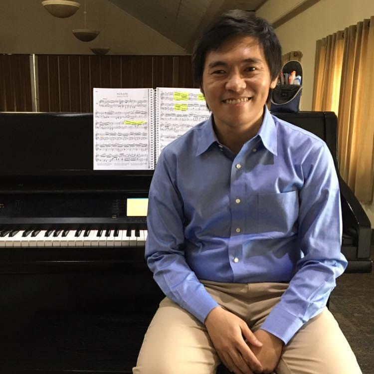

Meet Teacher Jet
Hello! I am Aaron J Evan M. Tolentino, the founder of Talented Keys. My students prefer to call me Teacher Jet. I studied at the University of the Philippines College of Music, majoring in Music Education.
My journey has allowed me to master various teaching methods designed to help students learn holistically. I focus on developing the mind, ear, and heart of every student to ensure they become well-rounded musicians.
Outside the studio, I develop music theory tools like 'The Harmonic Architect' and stay inspired by the Urtext tradition.